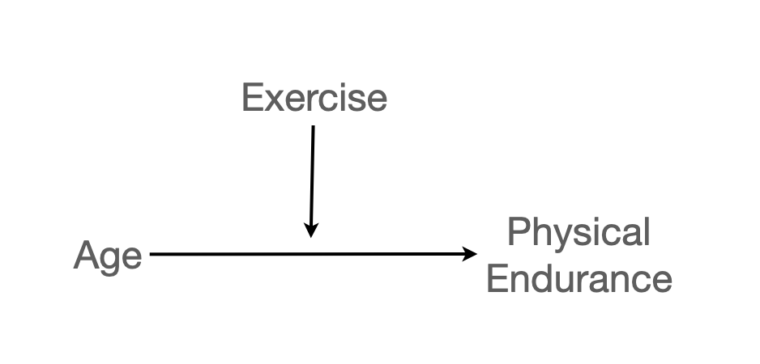
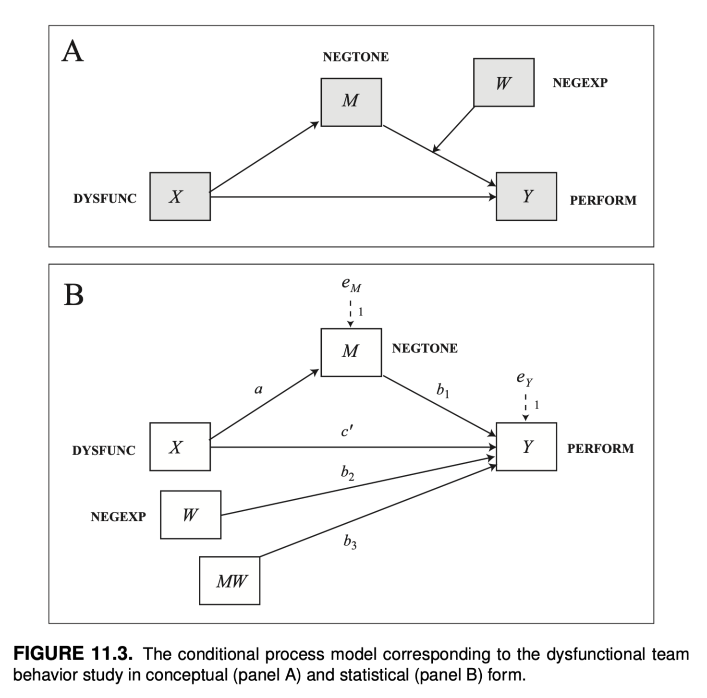

Load libraries
library(tidyverse)
library(lavaan)
library(semTools)Mixed
library(tidyverse)
library(lavaan)
library(semTools)이전 수업 링크
나이가 듦(age)에 따른 지구력(endurance)의 감소가 운동을 한 기간(exercise)에 따라 변화하는가? (p.275)
endurance: the number of minutes of sustained jogging on a treadmill
exercise: the number of years of vigorous physical exercise

Data: c07e01dt
acad2 <- read_csv('data/c07e01dt.csv')
acad2 |> print()# A tibble: 245 x 3
age exercise endurance
<dbl> <dbl> <dbl>
1 60 10 18
2 40 9 36
3 29 2 51
4 47 10 18
5 48 9 23
6 42 6 30
7 55 8 8
8 43 19 40
9 39 9 28
10 51 14 15
# i 235 more rowsmod_interact <- lm(endurance ~ age * exercise, data = acad2)
# 동일: endurance ~ age + exercise + age:exercise
car::S(mod_interact)Call: lm(formula = endurance ~ age * exercise, data = acad2)
Coefficients:
Estimate Std. Error t value Pr(>|t|)
(Intercept) 53.17896 7.52661 7.065 1.71e-11 ***
age -0.76596 0.15980 -4.793 2.87e-06 ***
exercise -1.35095 0.66626 -2.028 0.043694 *
age:exercise 0.04724 0.01359 3.476 0.000604 ***
---
Signif. codes: 0 '***' 0.001 '**' 0.01 '*' 0.05 '.' 0.1 ' ' 1
Residual standard deviation: 9.7 on 241 degrees of freedom
Multiple R-squared: 0.2061
F-statistic: 20.86 on 3 and 241 DF, p-value: 4.764e-12
AIC BIC
1814.57 1832.07 lavvan에서는 상호작용 항(interaction term)이나 범주형 변수에 대해 처리해주지 않음
fastDummies::dummy_cols() 함수를 사용하면 쉽게 만들 수 있음.acad2 <- acad2 |>
mutate(age_c = jtools::center(age),
exercise_c = jtools::center(exercise),
age_x_exercise_c = age_c * exercise_c)
acad2 |> print()# A tibble: 245 x 6
age exercise endurance age_c exercise_c age_x_exercise_c
<dbl> <dbl> <dbl> <dbl> <dbl> <dbl>
1 60 10 18 10.8 -0.673 -7.28
2 40 9 36 -9.18 -1.67 15.4
3 29 2 51 -20.2 -8.67 175.
4 47 10 18 -2.18 -0.673 1.47
5 48 9 23 -1.18 -1.67 1.98
6 42 6 30 -7.18 -4.67 33.6
7 55 8 8 5.82 -2.67 -15.5
8 43 19 40 -6.18 8.33 -51.5
9 39 9 28 -10.2 -1.67 17.0
10 51 14 15 1.82 3.33 6.04
# i 235 more rows# lavaan model
model <- '
endurance ~ age_c + exercise_c + age_x_exercise_c
'
fit <- sem(model, data = acad2)
summary(fit, standardized = TRUE) |> print()lavaan 0.6-18 ended normally after 1 iteration
Estimator ML
Optimization method NLMINB
Number of model parameters 4
Number of observations 245
Model Test User Model:
Test statistic 0.000
Degrees of freedom 0
Parameter Estimates:
Standard errors Standard
Information Expected
Information saturated (h1) model Structured
Regressions:
Estimate Std.Err z-value P(>|z|) Std.lv Std.all
endurance ~
age_c -0.262 0.064 -4.119 0.000 -0.262 -0.244
exercise_c 0.973 0.135 7.183 0.000 0.973 0.429
age_x_exercs_c 0.047 0.013 3.504 0.000 0.047 0.201
Variances:
Estimate Std.Err z-value P(>|z|) Std.lv Std.all
.endurance 92.546 8.362 11.068 0.000 92.546 0.794
p. 424, Introduction to Mediation, Moderation, and Conditional Process Analysis (3e) by Andrew F. Hayes
11.3 예시: 업무 팀에게 자신의 감정 숨기기 수년에 걸쳐 대중음악은 우리의 직관을 강화해왔고, 친한 친구들이 제공한 조언이나 친한 친구들이 제공하고 토크쇼 심리학자들은 감정을 억누르고 다른 사람의 눈에 띄지 않도록 숨겨서는 좋은 결과를 얻을 수 없다고 강조합니다. 당대의 아티스트들은 “자신을 표현하라”(마돈나)고, “침묵의 강령”(빌리 조엘)에 따라 살면 결코 과거를 잊지 못할 것이며 “절대 말하지 않을 것들”(에이브릴 라빈)의 목록이 길수록 인생에서 원하는 것을 얻을 가능성이 줄어든다는 것을 조심하라고 말합니다. 따라서 다른 사람이 “나랑 얘기 좀 하자”(아니타 베이커)는 요청을 할 때는 경계심을 풀고 마음속에 있는 이야기를 “소통”(B-52)하는 것이 중요합니다. 하지만 적어도 일부 업무 관련 상황에서는 반드시 그렇지는 않다고 M. S. Cole 외(2008)의 팀워크에 관한 연구에 따르면 말합니다. 이 연구자들에 따르면, 때로는 함께 일하는 다른 사람들이 자신을 괴롭히는 행동이나 말에 대해 자신의 감정을 숨기는 것이 더 나을 수 있으며, 그러한 감정이 팀의 관심의 초점이 되어 팀이 적시에 효율적인 방식으로 작업을 수행하는 데 방해가 되지 않도록 하는 것이 더 나을 수 있습니다. 이 연구는 조건부 프로세스 모델의 추정과 해석의 메커니즘을 설명하는 첫 번째 사례의 데이터를 TEAMS라는 데이터 파일로 제공하며, www.afhayes.com 에서 확인할 수 있습니다. 이 연구는 자동차 부품 제조 회사에 고용된 60개의 작업 팀을 대상으로 진행되었으며, 회사 직원 200여 명을 대상으로 작업 팀에 대한 일련의 질문과 팀 감독자에 대한 다양한 인식에 대한 설문조사에 대한 응답을 기반으로 합니다. 이 연구의 일부 변수는 그룹 수준에서 측정된 것으로 같은 팀원들이 말한 내용을 종합하여 도출한 것입니다. 다행히 팀원들이 팀에 대한 질문에 응답하는 방식이 매우 유사하여 이러한 종류의 집계를 정당화할 수 있었습니다. 다른 변수는 순전히 팀 상사의 보고를 기반으로 합니다.
이 분석과 관련된 네 가지 변수를 측정했습니다. 팀원들이 다른 팀원들의 업무를 약화시키거나 변화와 혁신을 방해하는 행동을 얼마나 자주 했는지 등 팀원들의 역기능적 행동에 대한 일련의 질문(데이터 파일에서 DYSFUNC, 점수가 높을수록 팀 내 역기능적 행동이 많음을 나타냄)을 던져 팀원들의 역기능적 행동을 측정했습니다. 또한 팀원들에게 직장에서 ‘화가 났다’, ‘역겨웠다’ 등을 얼마나 자주 느끼는지 물어봄으로써 그룹의 부정적인 정서적 분위기를 측정했습니다(NEGTONE, 점수가 높을수록 업무 환경의 부정적인 정서적 분위기를 더 많이 반영함). 팀 상사에게는 팀이 얼마나 효율적이고 적시에 일을 처리하는지, 팀이 생산 목표를 달성하는지 등 전반적인 팀 성과에 대한 평가를 제공하도록 요청했습니다(데이터의 성과, 점수가 높을수록 성과가 좋음을 반영하는 척도). 또한 슈퍼바이저는 팀원들이 자신의 감정에 대해 보내는 비언어적 신호를 얼마나 쉽게 읽을 수 있는지를 측정하는 일련의 질문, 즉 비언어적 부정적 표현력(데이터 파일의 NEGEXP, 점수가 높을수록 팀원들이 부정적인 감정 상태를 비언어적으로 더 잘 표현한다는 의미)에 응답했습니다. 이 연구의 목표는 업무 팀원의 역기능적 행동이 업무 팀의 성과에 부정적인 영향을 미칠 수 있는 메커니즘을 조사하는 것이었습니다. 연구진은 역기능적 행동(X)으로 인해 상사와 다른 직원들이 직면하고 관리하려고 하는 부정적인 감정(M)으로 가득 찬 업무 환경이 조성되면 업무에 집중하지 못하고 업무 수행에 방해가 된다는 중재 모델을 제안했습니다(Y). 그러나 이 모델에 따르면 팀원들이 부정적인 감정(W)을 조절할 수 있게 되면, 즉 자신의 감정을 다른 사람에게 숨길 수 있게 되면 업무 환경의 부정적인 분위기와 다른 사람의 감정을 관리하는 데 집중할 필요 없이 당면한 업무에 집중할 수 있게 됩니다. 즉, 이 모델에서는 업무 환경의 부정적인 정서적 어조가 팀 성과에 미치는 영향은 팀원이 자신의 감정을 숨기는 능력에 따라 달라지며, 부정적 감정을 숨기지 않고 표현하는 팀에서 부정적인 정서적 어조가 성과에 미치는 부정적 영향이 더 강하다고 가정합니다.

Data: Introduction to Mediation, Moderation, and Conditional Process Analysis; “data files and code”
teams <- read_csv("data/teams.csv")
teams <- teams |>
mutate(
negtone_c = jtools::center(negtone),
negexp_c = jtools::center(negexp),
negtone_negexp_c = negtone_c*negexp_c,
)
teams |> print()# A tibble: 60 x 7
dysfunc negtone negexp perform negtone_c negexp_c negtone_negexp_c
<dbl> <dbl> <dbl> <dbl> <dbl> <dbl> <dbl>
1 -0.23 -0.51 -0.49 0.12 -0.557 -0.482 0.268
2 -0.13 0.22 -0.49 0.52 0.173 -0.482 -0.0832
3 0 -0.08 0.84 -0.08 -0.127 0.848 -0.108
4 -0.33 -0.11 0.84 -0.08 -0.157 0.848 -0.133
5 0.39 -0.48 0.17 0.12 -0.527 0.178 -0.0940
6 1.02 0.72 -0.82 1.12 0.673 -0.812 -0.546
7 -0.35 -0.18 -0.66 -0.28 -0.227 -0.652 0.148
8 -0.23 -0.13 -0.16 0.32 -0.177 -0.152 0.0269
9 0.39 0.52 -0.16 -1.08 0.473 -0.152 -0.0717
10 -0.08 -0.26 -0.16 -0.28 -0.307 -0.152 0.0466
# i 50 more rows# standard deviation of negative expression
sd(teams$negexp_c) |> print()[1] 0.543701mod <- "
# models
perform ~ c*dysfunc + b1*negtone_c + b2*negexp_c + b3*negtone_negexp_c
negtone_c ~ a*dysfunc
# conditional effects: m-sd, m, m+sd
b_low := b1 + b3*(-0.5437) # mean - sd; sd = 0.5437
b_mean := b1 + b3*0 # mean
b_high := b1 + b3*0.5437 # mean + sd
# conditional indirect effects
ab_low := a * b_low
ab_mean := a * b_mean
ab_high := a * b_high
# index of moderated mediation
index_Mod_Med := a*b3
"
fit <- lavaan::sem(model = mod, data = teams, se = "bootstrap", meanstructure = T)
summary(fit, standardized = T) |> print()lavaan 0.6-18 ended normally after 2 iterations
Estimator ML
Optimization method NLMINB
Number of model parameters 9
Number of observations 60
Model Test User Model:
Test statistic 6.999
Degrees of freedom 2
P-value (Chi-square) 0.030
Parameter Estimates:
Standard errors Bootstrap
Number of requested bootstrap draws 1000
Number of successful bootstrap draws 1000
Regressions:
Estimate Std.Err z-value P(>|z|) Std.lv Std.all
perform ~
dysfunc (c) 0.366 0.191 1.917 0.055 0.366 0.270
negtone_c (b1) -0.431 0.128 -3.376 0.001 -0.431 -0.451
negexp_c (b2) -0.044 0.099 -0.442 0.659 -0.044 -0.047
ngtn_ngx_ (b3) -0.517 0.244 -2.121 0.034 -0.517 -0.278
negtone_c ~
dysfunc (a) 0.620 0.221 2.805 0.005 0.620 0.438
Intercepts:
Estimate Std.Err z-value P(>|z|) Std.lv Std.all
.perform -0.032 0.060 -0.531 0.596 -0.032 -0.064
.negtone_c -0.021 0.059 -0.367 0.714 -0.021 -0.041
Variances:
Estimate Std.Err z-value P(>|z|) Std.lv Std.all
.perform 0.185 0.033 5.663 0.000 0.185 0.742
.negtone_c 0.219 0.050 4.428 0.000 0.219 0.808
Defined Parameters:
Estimate Std.Err z-value P(>|z|) Std.lv Std.all
b_low -0.150 0.223 -0.675 0.499 -0.150 -0.300
b_mean -0.431 0.128 -3.375 0.001 -0.431 -0.451
b_high -0.713 0.135 -5.271 0.000 -0.713 -0.601
ab_low -0.093 0.153 -0.611 0.541 -0.093 -0.131
ab_mean -0.267 0.118 -2.267 0.023 -0.267 -0.198
ab_high -0.442 0.161 -2.739 0.006 -0.442 -0.264
index_Mod_Med -0.320 0.190 -1.683 0.092 -0.320 -0.122
# 모든 parameter에 대한 결과
parameterEstimates(fit, level = 0.95, boot.ci.type = "bca.simple") |> print() lhs op rhs label est se z
1 perform ~ dysfunc c 0.366 0.191 1.917
2 perform ~ negtone_c b1 -0.431 0.128 -3.376
3 perform ~ negexp_c b2 -0.044 0.099 -0.442
4 perform ~ negtone_negexp_c b3 -0.517 0.244 -2.121
5 negtone_c ~ dysfunc a 0.620 0.221 2.805
6 perform ~~ perform 0.185 0.033 5.663
7 negtone_c ~~ negtone_c 0.219 0.050 4.428
8 dysfunc ~~ dysfunc 0.136 0.000 NA
9 dysfunc ~~ negexp_c -0.001 0.000 NA
10 dysfunc ~~ negtone_negexp_c -0.003 0.000 NA
11 negexp_c ~~ negexp_c 0.291 0.000 NA
12 negexp_c ~~ negtone_negexp_c 0.046 0.000 NA
13 negtone_negexp_c ~~ negtone_negexp_c 0.072 0.000 NA
14 perform ~1 -0.032 0.060 -0.531
15 negtone_c ~1 -0.021 0.059 -0.367
16 dysfunc ~1 0.035 0.000 NA
17 negexp_c ~1 0.000 0.000 NA
18 negtone_negexp_c ~1 0.024 0.000 NA
19 b_low := b1+b3*(-0.5437) b_low -0.150 0.223 -0.675
20 b_mean := b1+b3*0 b_mean -0.431 0.128 -3.375
21 b_high := b1+b3*0.5437 b_high -0.713 0.135 -5.271
22 ab_low := a*b_low ab_low -0.093 0.153 -0.611
23 ab_mean := a*b_mean ab_mean -0.267 0.118 -2.267
24 ab_high := a*b_high ab_high -0.442 0.161 -2.739
25 index_Mod_Med := a*b3 index_Mod_Med -0.320 0.190 -1.683
pvalue ci.lower ci.upper
1 0.055 -0.035 0.716
2 0.001 -0.675 -0.163
3 0.659 -0.234 0.155
4 0.034 -1.051 -0.087
5 0.005 0.234 1.085
6 0.000 0.137 0.262
7 0.000 0.144 0.345
8 NA 0.136 0.136
9 NA -0.001 -0.001
10 NA -0.003 -0.003
11 NA 0.291 0.291
12 NA 0.046 0.046
13 NA 0.072 0.072
14 0.596 -0.154 0.082
15 0.714 -0.140 0.099
16 NA 0.035 0.035
17 NA 0.000 0.000
18 NA 0.024 0.024
19 0.499 -0.510 0.346
20 0.001 -0.675 -0.163
21 0.000 -1.098 -0.520
22 0.541 -0.435 0.182
23 0.023 -0.585 -0.098
24 0.006 -0.817 -0.168
25 0.092 -0.839 -0.058